Before we can start using any flow model, we need a way to create noisy training
inputs from our original images. To do this, we will interpolate between our clean image
and some random Gaussian noise. The equation for this is:
\[x_t = (1-t)x_0 + tx_1\]
with \(x_0\) representing the noise and \(x_1\) representing the clean image. We will use this
equation in the interpolate function, resulting in the images below.
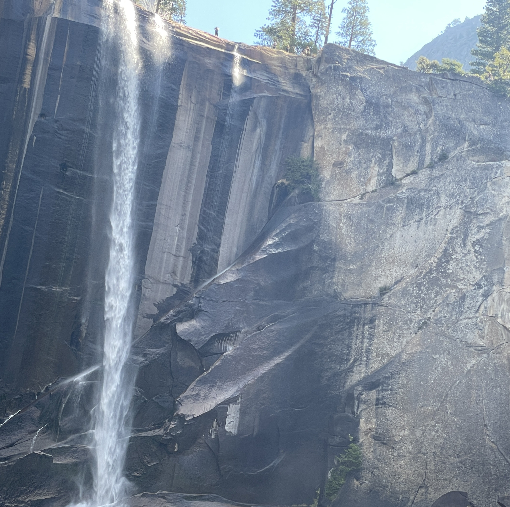
Waterfall
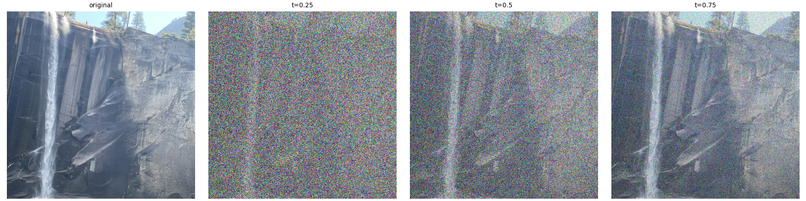
Original Image
Classical Denoising
On top of just interpolating to obtain the noisy version of the original image, we also
can apply a Gaussian blur to them. This will help reduce the overall noise of the image.
However, it does come with some tradeoffs as blurring the image
can remove the finer details of the images.
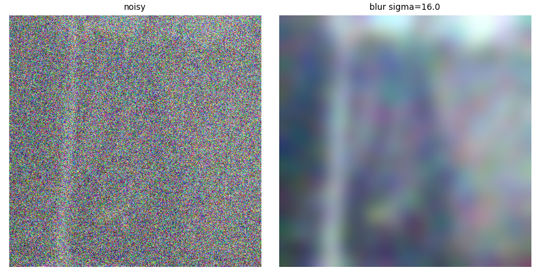
t = 0.25
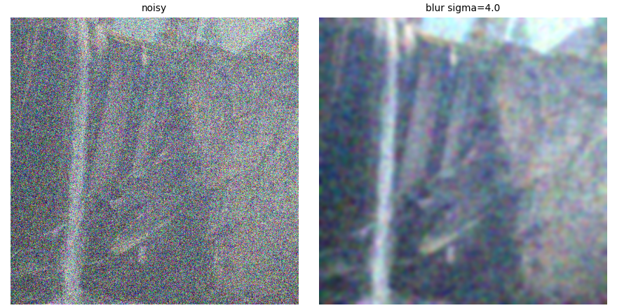
t = 0.50
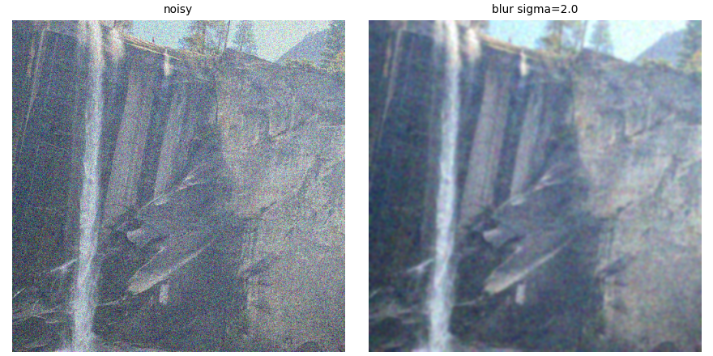
t = 0.75
For the Gaussians, the sigmas used were 16, 4, and 2 for t=0.25, t=0.50,
and t=0.75 respectively. These were chosen as they minimized the error between
the noisy images and the original image. And while the amount of details
varies drastically depending on how much noise the images started with,
across the board the Gaussian blurring still did bring out some of the
lower frequency details of the waterfall.
One-Step Denoising
Rather than just relying on a Gaussian blur to denoise the images, we can also use a pretrained
flow model, utilized through the function predict_velocity. This function takes in
the partially noisy image, its current time step, and the condition, which is a prompt that dictates
how the flow model operates. With this flow model, we can use it to try and denoise the images
within one step.
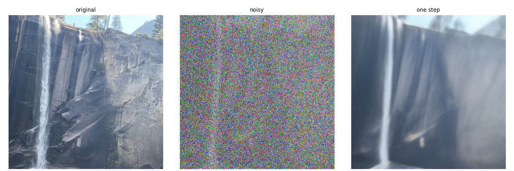
t = 0.25
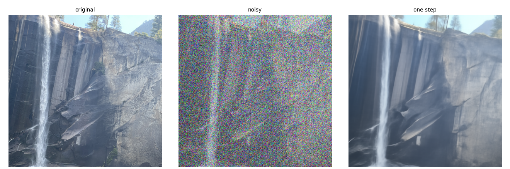
t = 0.50
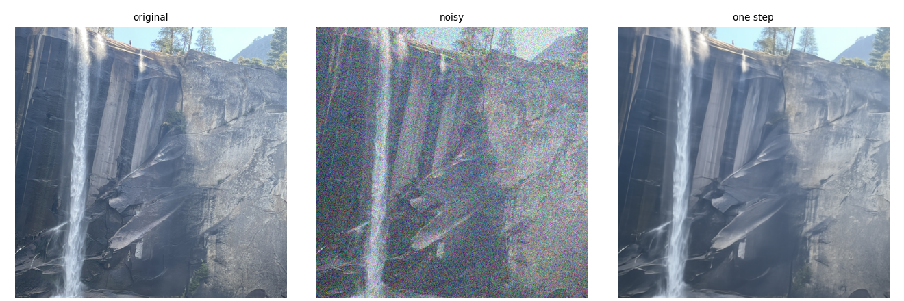
t = 0.75
While still not perfect, the one-step estimates performed much better than the Gaussian blurs
when it comes to recreating our original image. More specifically, even in the one-step estimate of
t = 0.25, the resulting image still resembled the waterfall just as well as the
t = 0.75 Gaussian blur.
Visualizing Velocity
In order to improve our denoising even more, we can visualize how off our one-step estimate
velocity is from the true velocity, with the hopes of seeing where things went wrong. To do this,
we can determine the ground-truth update by calculating \(x_1-x_t\) and compare it to
the velocities that our flow model predicted.
Original Waterfall
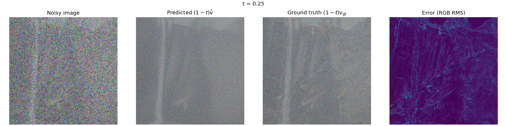
t = 0.25
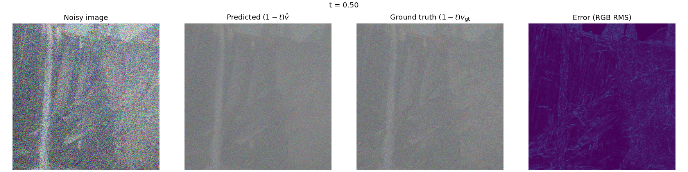
t = 0.50
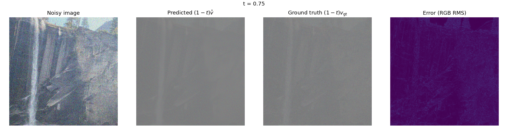
t = 0.75
To further demonstrate the differences in velocities, an error heatmap is provided where
each pixel represents an error value. The brighter the value means the greater the error
between the predicted and true velocity.
Iterative Denoising with Euler Sampling
In order for our final denoising result to be more accurate, we can break it down into
multiple smaller predictions, as the learned velocity changes as the image becomes less noisy.
We can use the Euler integration to do this:
\[x_{t+h}=x_t+hv_\theta(x_t,t,c)\]
With h representing the small step size between each prediction.
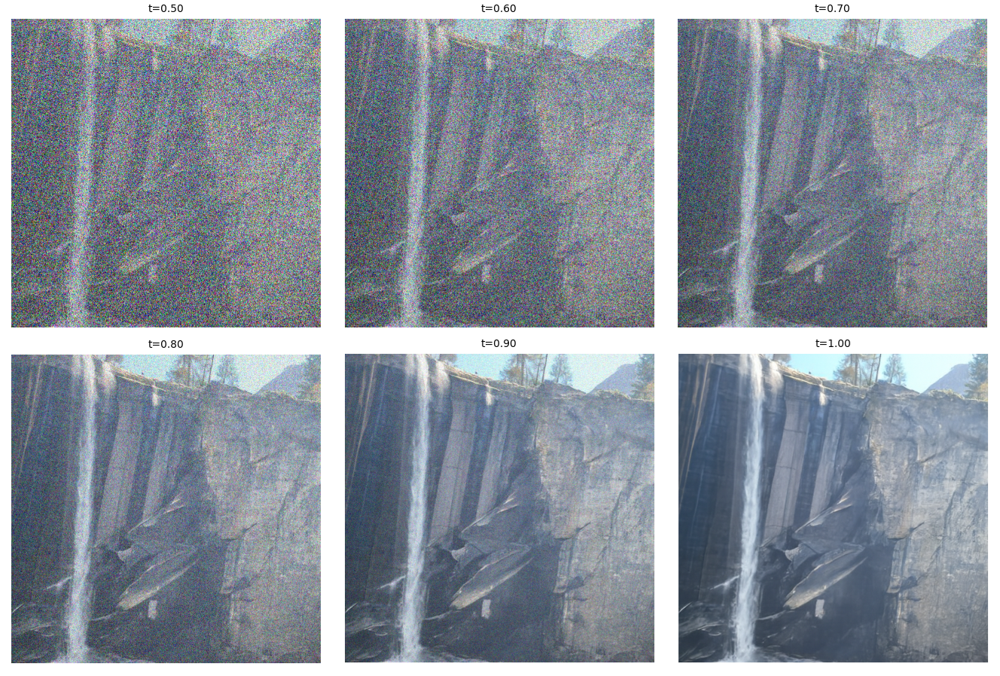
Euler Denoising Trajectory
In the images above, the initial t = 0.50 with a step size of 0.02. The images above represents
every fifth update. Even though this step size perfectly aligns with 1, our euler_sample function
allows h to be shortened via h = min(step_size, 1 - t), it can still handle situations where
this isn't the case. When comparing Euler sampling to the previous images we've generated, Euler
is a clear winner almost perfectly recreating the original image. One-Step
denoising is second best, though a lot of the high-level details are missing.
On the other hand, although the Gaussian blur has the major aspects of the waterfall, the extra
leftover noise leaves it still far from the original image.
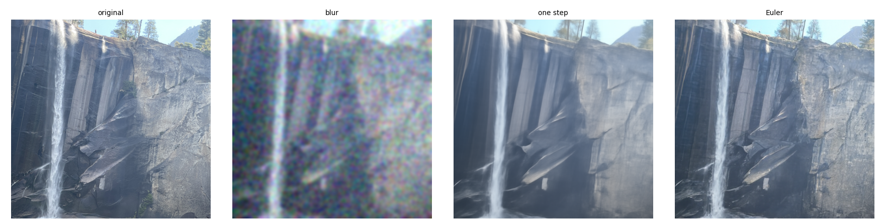
Comparison between Gaussian Blur, One-Step Estimate, and Euler Denoising
Generating Images from Noise
On top of denoising images, our euler_sample function can also be used
to generate images from scratch. Five such examples are shown below, all using the
prompt "a high quality photo" and an initial start from pure noise.
Seed: 180
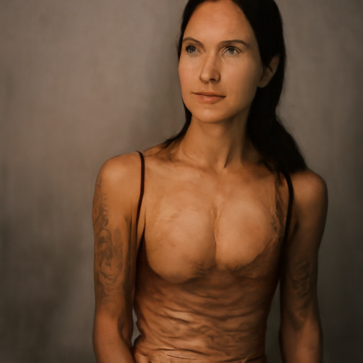
Seed: 181Seed: 182Seed: 183Seed: 184
There are a few things to note about the generated images above. For one,
they all appear to be humanoids, signifiying that the model was likely
primaily trained on humans. Additionally, while human-like, the samples generates
overall aren't high quality with many deformities in them.
Classifier-Free Guidance
In order to improve our image generation, we can use classifier-free guidance. Unlike our
previous attempts, CFG helps point the generation into forming what the prompt says
while also not slashing the diversity of the images like with normal guidance. To do this,
we implement cfg_velocity which uses the formula:
\[v_{cfg} = v_c+w(v_c-v_u)\]
Where \(v_c\) and \(v_u\) represents the conditional and unconditional velocities respectively
and w represents guidance weight. We can then use CFG on the same seeds as before to see how
they compare.
In the images above, they all use w = 7 and a step size of 0.02.
While still not perfect, these images all appear mostly realistic with subtle
errors. For example, seed 183 with CFG depicts a man with a slightly irregular eye
while seed 183 without CFG lacks any clothes and some facial features.
Image-to-Image Editing
Currently, our flow model is just trying to recreate an image given some noise. To do this, it
"hallucinates" and comes up with random things in order to make something out of the noise.
We can use these "hallucinations" to make edits to our images by adding noise to our
images and denoising it again.
Campanile
The further away the starting point is from the clean image the more "edits". In the images
with t < 0.10, the final images barely even resemble the Campanile, while in each of the later
ones each have more features added back. In the next two images, the same pattern can be seen.
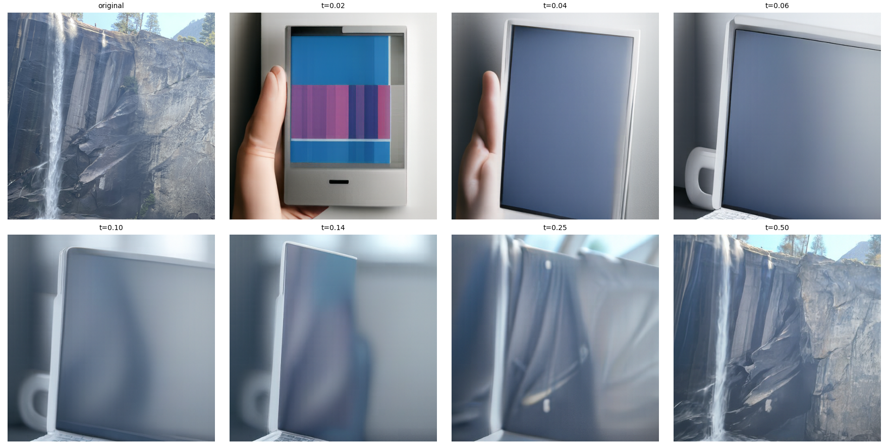
Waterfall
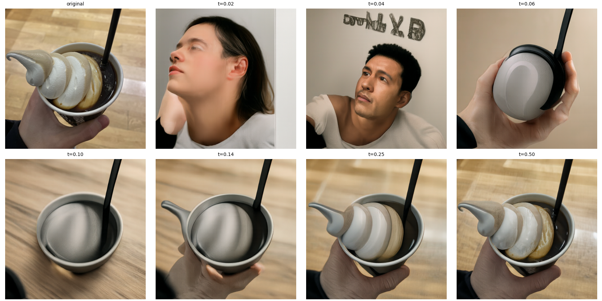
Ice Cream
Not only does this "editing" work well with normal images, it works especially well
with nonrealistic images, as seen in the three images below.
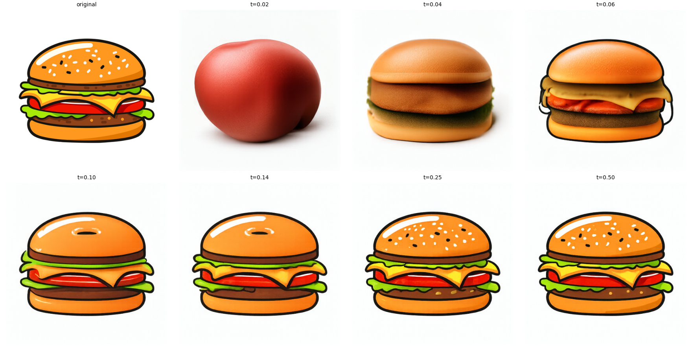
Web Image: Burger
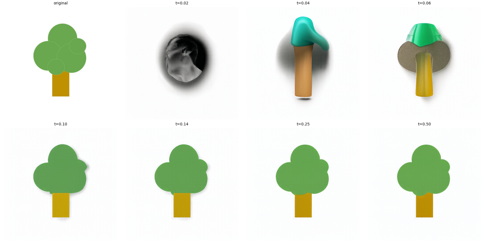
Drawing: Tree
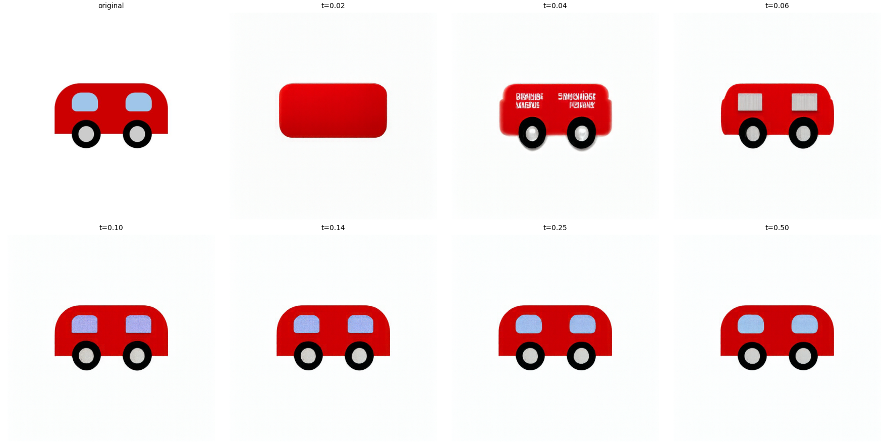
Drawing: Car
In all five examples, the images starting from t = 0.02 had the most "edits" to them,
barely even resembling the original images. This carries on for only a bit longer though,
as by t = 0.10 the original images began forming again with minor edits to them.
Text-Guided Image Editing
With our edit function, we can also guide the model into changing the image into what
we want by changing what prompt we use. Up until now, we've just been using "a high quality photo"
as our prompt, but we can be more specific.
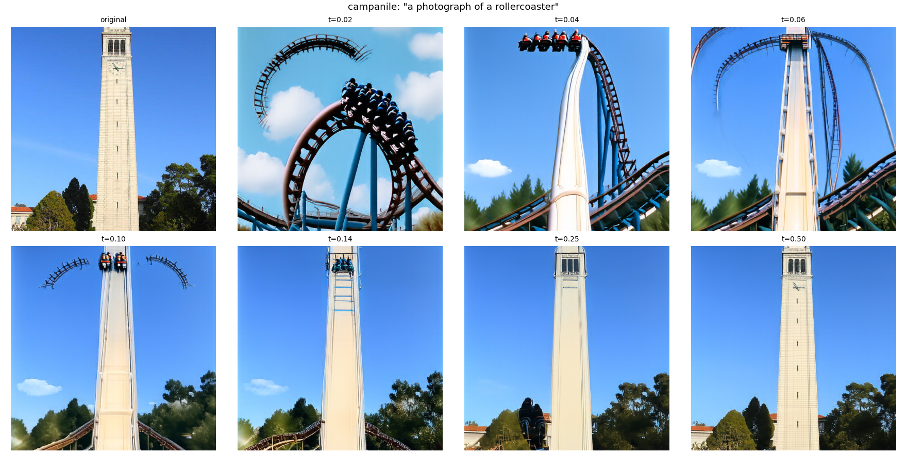
Campanile to Rollercoaster
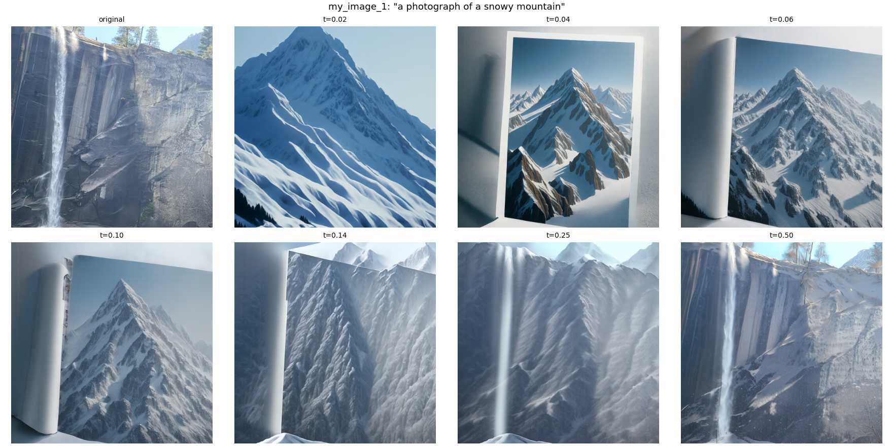
Waterfall to Snowy Mountain
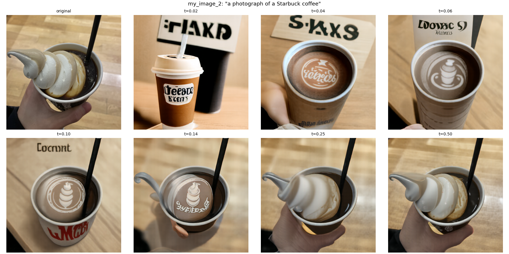
Ice Cream to Coffee
Unlike the previous section, by changing the prompt to be more specific, we can change
the edits from being basically random into depicted what every we want. There is some
limits though, as prompts farther from the original image seemed to perform worse.
For instance, the prompt for the Campanile was "a photograph of a rollercoaster" and with
few overlapping details, the resulting edit had many errors. For the waterfall, the prompt
was "a photograph of a snowy mountain". This performed much better as not only are they
both depicting nature, but they also share a similar color palette.
Visual Anagrams
Using our flow model, we can also create Visual Anagrams, which are images that look like one
thing when right side up and another thing when flipped upside down. This works by first
denoising an image like normal with prompt \(p_1\) to find \(v_1\), and then flipping it to
denoise it again with prompt \(p_2\) to find \(v_2\). By averaging the two velocities together,
we can guide the denoising process into creating an image that shows both images.
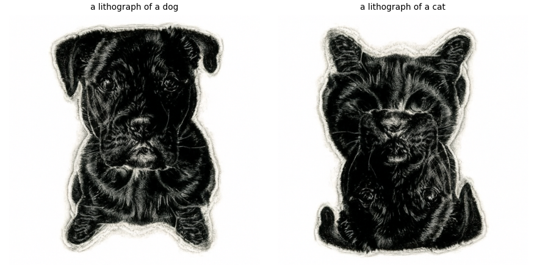
Dog and a Cat Anagram
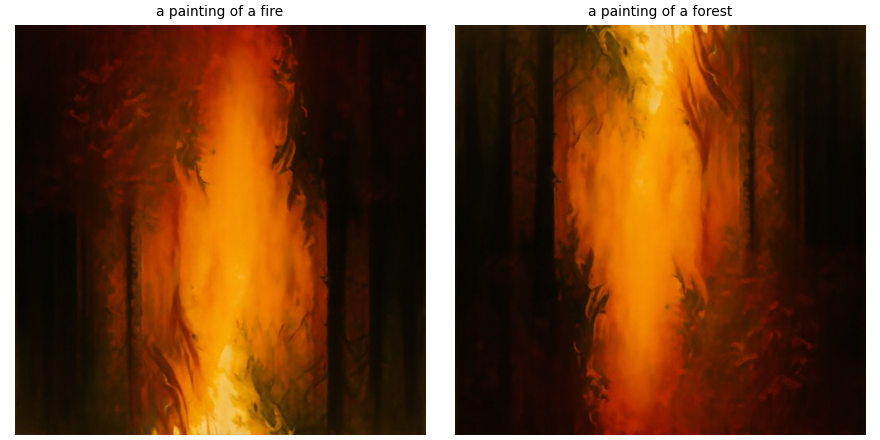
Fire and a Forest Anagram
As these visual anagrams rely on creating an illusion, picking two good prompts mattered a lot,
as evident by one of the failed attempts shown below.
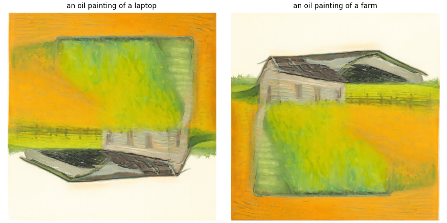
Attempted Anagram of a Laptop + Farm
Hybrid Images
Similarly to visual anagrams, we can combine two different velocities together to make hybrid images
just like the ones from Project 2. Rather than flipping the noise before conditioning the model
on a different prompt, we instead can run a high or low pass filter before conditioning the model.
This gives us two different velocities with one guiding the low frequencies towards \(p_1\)
and another guiding the high frequencies to \(p_2\)
Near: A painting of a starry night skyDistant: A painting of a bear
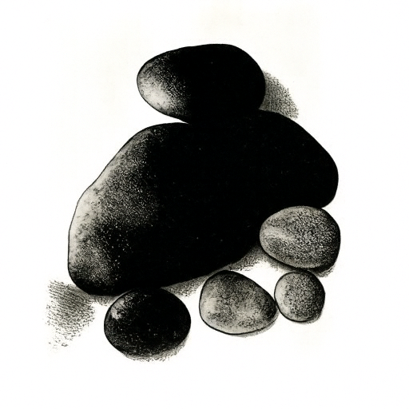
Near: A lithograph of stonesDistant: A lithograph of a crow
Implementing the UNet
On our way to training our own flow matching model, we first will have to train
our own Single-step UNet. At a high level, this model first downsamples a couple of times
using DownBlock and Flatten. Then, it performs a few upsampling
with Unflatten and UpBlock. This sequence allows us to condense the
image into a small form, enabling the model to grasp the global context much more
clearly before returning back to the original dimensions.
Additionally, during the upsampling side of the UNet, we also include skip connections
via torch.cat that brings back the high-level context that was lost during
the downsampling process. Without this feature, our UNet would only be focusing on the
global context and not any of the finer details of the image.
Using the UNet to Train a Denoiser
Before we can train our denoiser, we need to be able to take our images and add
noise to them.
The image above shows an example of the noisifying process, with sigma representing
just how much noise we incorporate into our original image, represented by the formula:
\[z = x+\sigma\epsilon\]
where \(\epsilon\) is the random noise.
Single-Step Denoising Training
To train our model, we will be using \(\sigma\) = 0.5 and will train on batches of images
over the course of 5 epochs. With each passing epoch, our denoising model gets better, as shown
below.
Epoch 1
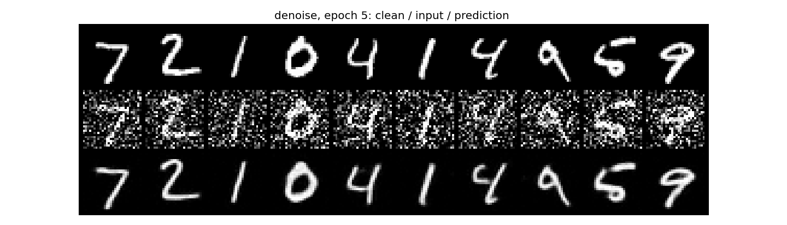
Epoch 5
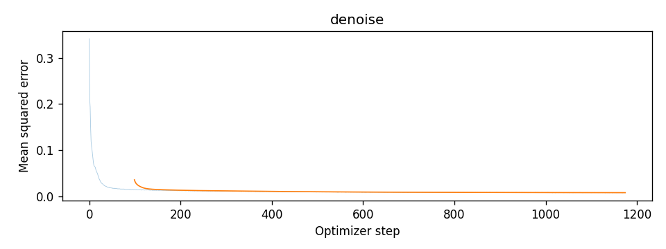
Training Loss
Out-Of-Distribution Testing
Our newly trained model works well when we use a fixed \(\sigma\) = 0.5,
but we can also use it on a variety of \(\sigma\) values to see how well it holds up.
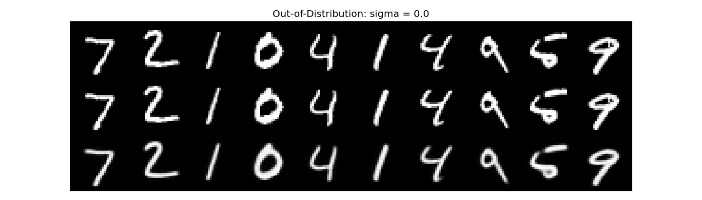
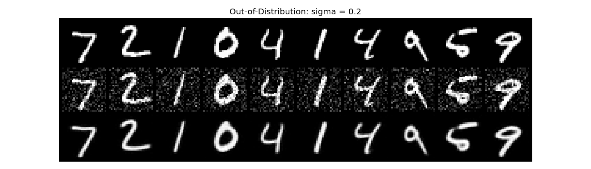
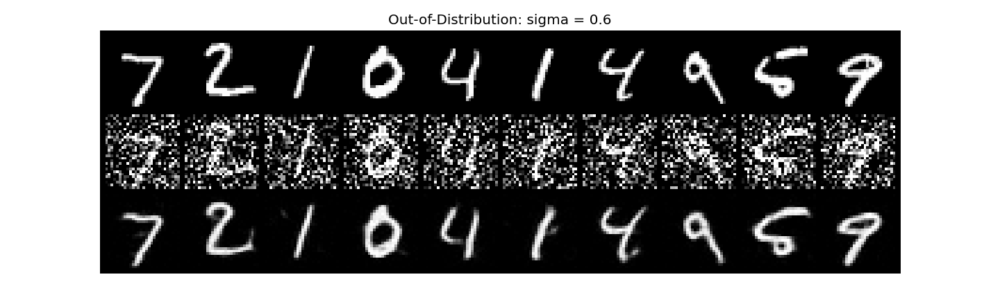
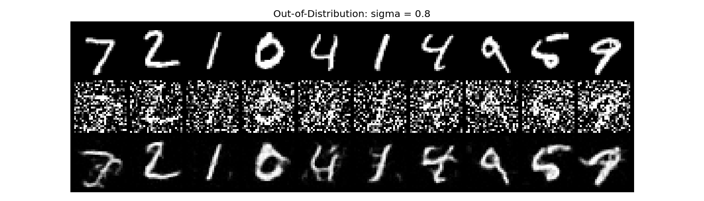
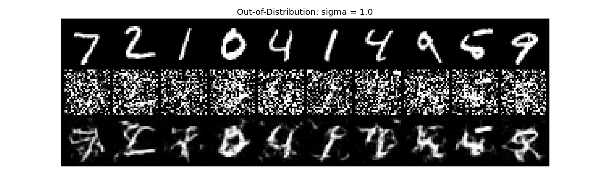
Based on the images above, our single-step denoising model can handle some variety of
noise, but as the noise increase past the \(\sigma\) = 0.5 mark, the quality of the final
results slowly degrades.
Denoising Pure Noise
On top of recreating digits from noisy images, a denoiser can also be used to
generate them from pure noise. This can be thought of as just starting from noise
rather than a linear combination of noise and our original image.
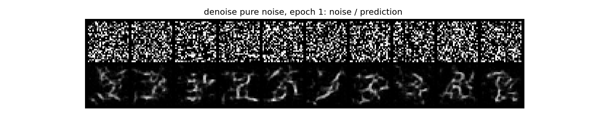
Epoch 1
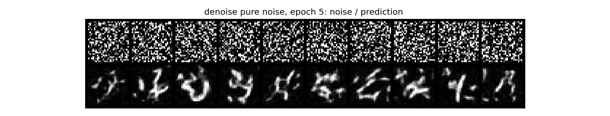
Epoch 5
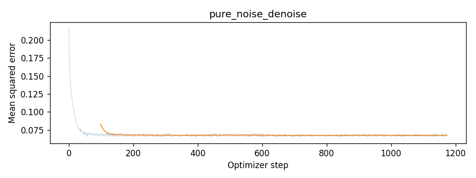
Pure Noise Loss
Unfortunately, our single-step denoiser does not perform well in this generating task.
Even after five epochs, rather than containing digits, the generated outputs on
resembles patterns of random strokes. This is likely due to the fact that our model
only learns to predict what minimizes the sum of squared distances to ALL
training examples. In this case, a couple strokes will be much better as its "closer"
to all digits than a single digit.
Adding Time Conditioning to UNet
To create a better denoiser, we will have to denoise the image iteratively and we will
do so with flow matching. At a high level, our flow matching model will
take in intermediate noisy samples constructed by the formula:
\[x_t=(1-t)x_0+tx_1\]
At each intermediate step, it'll learn what is the current best velocity, take a step
in that direction, and then repeat.
Training the UNet
When training this iterative model, one key detail that separates it from the
previous ones is that it will use an exponential learning rate that decays
over the course of time rather than a fixed learning rate. This is because
taking larger steps in the beginning of the training helps to quickly
make it towards our target manifold, while the smaller learning rate
later one helps fine-tune our model weights to exactly what we want.
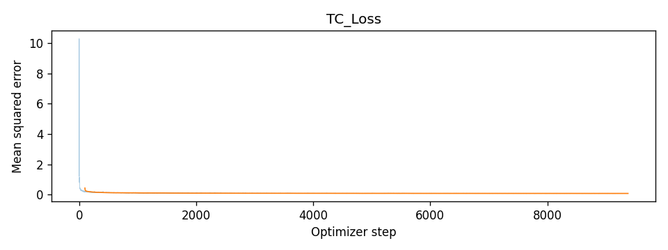
Time Conditioning Loss
Sampling from the UNet
Epoch 1Epoch 5Epoch 10
In the three images above we can see that, unlike with the single-step generator,
digits are starting to properly form, though it's not 100% accurate yet.
Adding Class-Conditioning to UNet
To further improve our flow matching model, we can add class conditioning. This
means that on top of just giving our model some noise for it to clean up,
we will also be giving it labels guiding it towards what digit we want it to make.
One issue with directly conditioning like this is that it can drastically limit
the diversity of images our model generates. To combat this, we will be once
again using CFG, by incorporating some unconditional generations with our
conditional ones in the training process.
Training and Sampling the UNet with Conditioning Vector
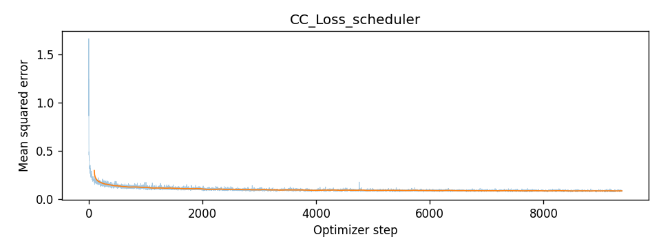
Class-Conditioning LossEpoch 1Epoch 5Epoch 10
With this final change, we can see as early as epoch 5 legible digits begin forming, with
epoch 10 being completely perfect. Additionally, as we remained guidance free, we maintained
most of our output diversity.
Scheduler Free Class Conditioning
As a final note, our decaying learning rate isn't entirely necessary to get good results.
In reality, a constant learning rate can be just as good, with a bit changes to compensate
for removing the scheduler. In this case, this meant reducing the overall learning rate
to 1e-3 from the initial 1e-2, as it acts as an average of the exponential learning rate.
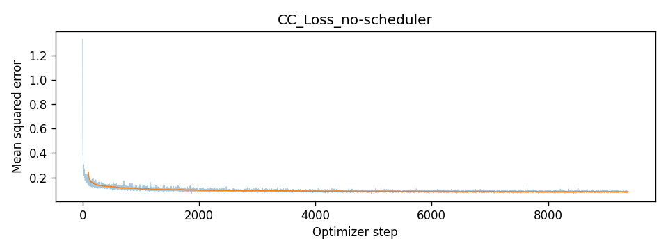
Class-Conditioning Loss w/o SchedulerEpoch 1Epoch 5Epoch 10